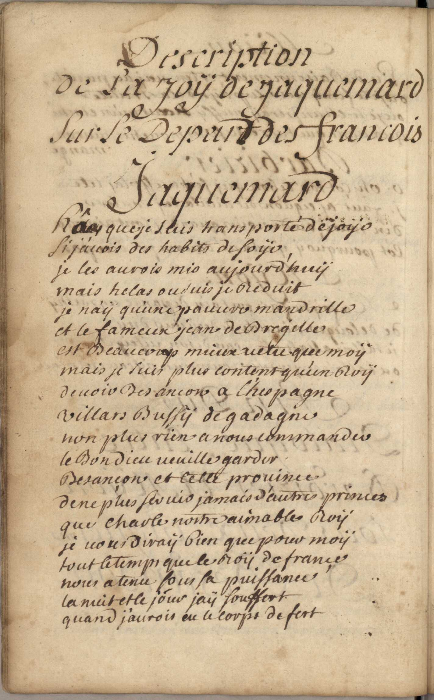
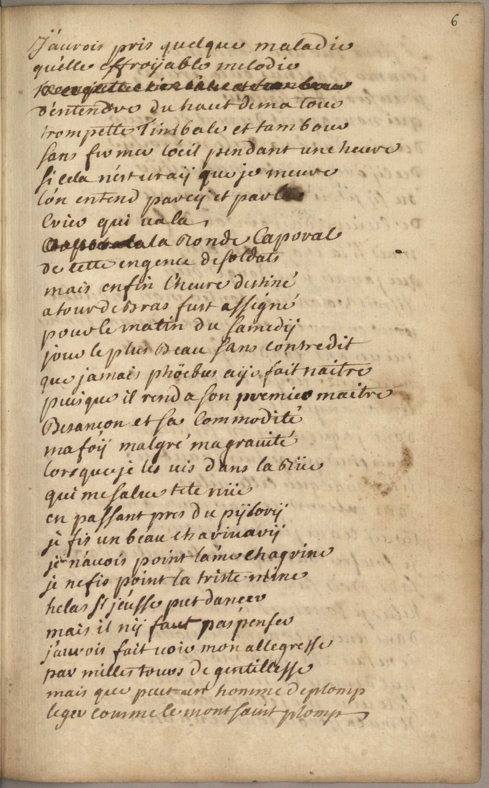
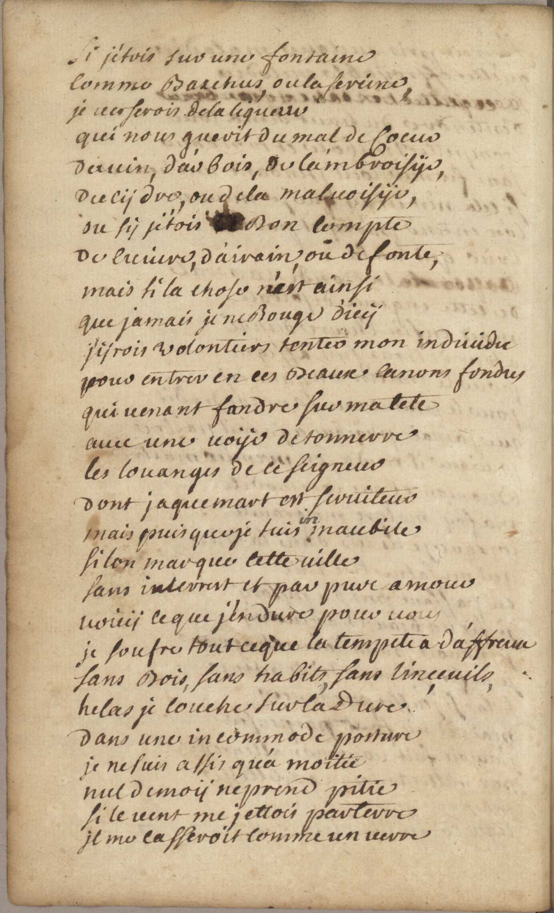
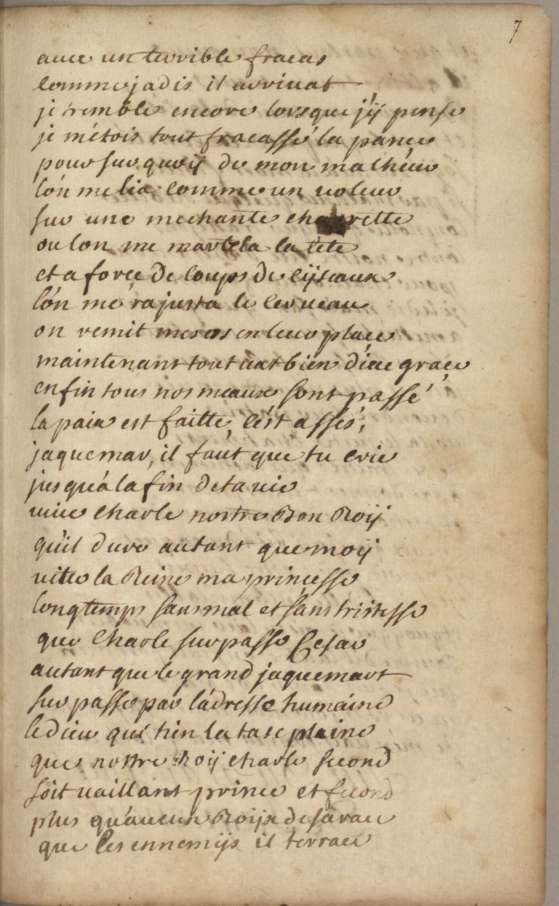
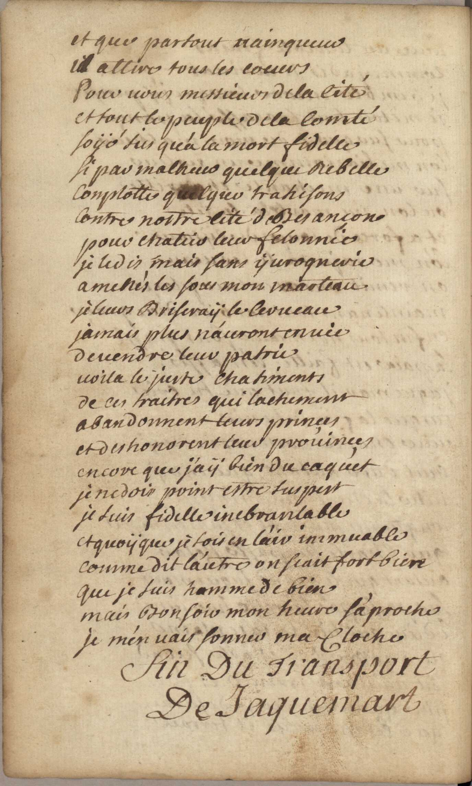

« Description de la joy de Jaquemard sur le départ des François »
En vers françois, à l'occasion du départ des troupes françoises en 1668
Click a manuscript image to enlarge it. Cliquez sur une image du manuscrit pour l’agrandir.

Description de la joy de Jaquemard sur le départ des francois
Jaquemard
Hâa, que je suis transporté de joÿe
Si j'auois des habits de soÿe
Je les aurois mis aujourd'huÿ
mais helas ou suis je reduit
je n'ay qu'une pauure mandrille
et le fameux Jean de Bregille
est beaucoup mieux vetu que moÿ
mais je suis plus content qu'un roÿ
de voir Besancon a L'hespagne
villars Bussÿ de gadagne
non plus rien a nous commander
le Bon dieu ueuille garder
Besancon et cette province
de ne plus seruir jamais d'autres princes
que Charle nostre aimables Roÿ
je uous diraÿ bien que pour moÿ
tout le temps que le roÿ de Françe
nous a tenu sous sa puissance
la nuit et le jour jaÿ souffert
quand j'aurois eu le corps de fert

J'aurois pris quelques maladies
qu'elles effroÿable melodie
trompette timbale et tambour
d'entendre du haut de ma tour
trompette timbale et tambour
sans fermer l'oeil pendant une heure
si cela n'est vraÿ que je meure
l'on entend parcy et parla
crier qui va la,
[caporal] a la ronde Caporal
de cette engence de soldats
mais enfin l'heure destiné
a tour de bras fust assigné
pour le matin du samedÿ
jour le plus beau sans contredit
que jamai phöebus aÿe fait naitre
puisque il rend a son premier maitre
Besançon et sa commodité
ma foÿ malgré ma grauité
lorsque je les uis dans la rüe
qui me salue tete nü
en passant pres du pÿlorÿ
je fis un beau charivarÿ
je n'auois point l'ame chagrine
je ne fis point la triste mine
helas si j'eusse put dançer
mais il nÿ faut pas penser
j'aurois fait uoir mon allegresse
par milles tours de gentillesse
mais que peut un homme de plomp
leger comme le mont saint plomp

Si j'étois sur une fontaine
comme Bacchus ou la sereine
je uerserois de la liqueur
qui nous guerit du mal de coeur
du uin d'arbois, de l'ambroisÿe,
Du cÿdre ou dela maluoisÿe
ou sÿ j'etois [mot taché: a ?] bon compte
de cuiure, d'airain oü de fonte,
mais si la chose n'est ainsi
que jamais je ne bouge d'icÿ
j'ÿrois volontiers tenter mon indiuidu
pour entrer en ces beaux canons fondus
qui uenant fandre sur ma tete
auec une uoÿe de tonnerre
les louange de ce seigneur
dont jaquemart est seruiteur
mais puisque je suis (im)maubile (le im est un ajout du copiste)
si lon marque cette uille
sans interrest et par pure amour
voicÿ ce que je j'endure pour uous
je soufre tout ce que la tempete a d'affreue
sans bois, sans habits, sans linçeuils
helas je couche sur la dure
dans une incommode posture
je ne suis assi qu'a moitié
nul de moÿ ne prend pitié
si le uent me jettois par terre
il me casseroit comme un uerre

avec un terrible fracas
comme jadis il arriuat
je tremble encore lorsque j'ÿ pense
je m'étois tout fracassé la pançe
pour sur quoÿ de mon malheur
l'on me lia comme un uoleur
sus une mechante ch[a]rette
ou lon me martela la tete
et a forçe de coups de cÿseaux
l'on me rajusta le cerueau
on remit mes os en leurs place
maintenant tout uat bien dieu graçe
enfin tous nos meaux sont passé
la paix est faitte, c'est assés,
Jaquemar, il faut que tu crie
jusqu'a la fin de ta uie
vive Charle nostre bon roÿ
qu'il dure autant que moÿ
uiue la Reine ma princesse
longtemps sans mal et sans tristesse
que Charle surpasse Cesar
autant que le grand jaquemart
surpasse par l'adresse humaine
le dieu qui tien la tase pleine
que nostre Roÿ charle second
soit uaillant prince et fecond
plus qu'aucun Roÿx de sa race
que les ennemÿs il terrace

et que partout vainqueur
il attire tous les coeurs
Pour uous messieurs de la cité
et tout le peuple de la comté
soÿé jusqu'a la mort fidelle
si par malheurs quelque rebelle
complotte quelque trahisons
contre nostre cité de Besançon
pour chatier leur felonnies
je le dis mais sans ÿurognerie
amenés les sous mon marteau
je leurs briseraÿ le cerueau
jamais plus n'auront enuie
de uendre leur patrie
uoila le juste chatiments
de ces traitres qui lachement
abandonnent leurs prinçes
et deshonorent leur provinçes
encore que j'aÿ bien du caquet
je ne dois point estre suspect
je suis fidelle inebranlable
et quoÿque je sois en l'air immuable
comme dit l'autre on scait fort bien
que je suis homme de bien
mais bonsoir mon heure s'aproche
je m'en vais sonner ma cloche
Fin du Transport de Jaquemart